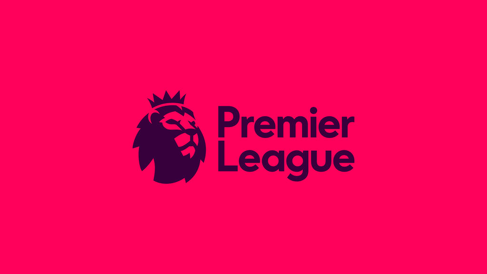

| Club | No. of Pl titles | Record goal scorer |
|---|---|---|
| Arsenal | 13 | Thierry Henry has scored 228 goals total. |
| Man Utd | 20 | Wayne Rooney has scored 253 goals total. |
| Chelsea | 6 | Frank Lampard has scored 211 goals total. |
| Man City | 4 | Sergio Aguero has scored 131 goals total. |
| Everton | 9 | Dixie Dean has scored 349 goals total. |
| Tottenham Hotspur | 2 | Jimmy Greaves has scored 266 goals total. |
The Premier League is an English professional league for men's association football clubs. At the top of the English football league system, it is the country's primary football competition which is Contested by 20 clubs, it operates on a system of promotion and relegation with the English Football League. Welsh clubs that compete in the English football league system can also qualify. 
The Premier League is a corporation in which the 20 member clubs act as shareholders. Their season runs from August to May. Teams play 38 matches each (playing each team in the league twice, home and away), totalling 380 matches in the season. Most games are played on Saturday and Sunday afternoons; others during weekday evenings. It is mainly known as the Premiership and outside the UK it is commonly referred to as the English Premier League.
The competition was formed as the FA Premier League on 20 February 1992 following the decision of clubs in the Football League First Division to break away from the Football League, which had been founded in 1888, and take advantage of a lucrative television rights deal. The deal was worth 1 billion a year domestically as of 2013 14, with Sky and BT Group securing the domestic rights to broadcast 116 and 38 games respectively. The league generates 2.2 billion per year in domestic and international television rights. In 2014 15, teams were apportioned revenues of 1,600 million pound,rising sharply to 2,400 million pounds in 2016 17.
The Premier League is the most-watched sports league in the world, broadcast in 212 territories to 643 million homes and a potential TV audience of 4.7 billion people.In the 2014 15 season, the average Premier League match attendance exceeded 36,000,second highest of any professional football league behind the Bundesliga's 43,500. Most stadium occupancies are near capacity. The Premier League ranks third in the UEFA coefficients of leagues based on performances in European competitions over the past five seasons.
In total, 49 clubs have competed since the inception of the Premier League in 1992. Six of them have won the title: Manchester United (13), Chelsea (5), Arsenal (3), Manchester City (2), Blackburn Rovers (1) and Leicester City (1) It also has a league cup which is called the EFL Cup and two demestic cups called the FA Cup and the FA Community Shield.
Despite significant European success in the 1970s and early 1980s, the late '80s marked a low point for English football. Stadiums were crumbling, supporters endured poor facilities, hooliganism was rife, and English clubs were banned from European competition for five years following the Heysel Stadium disaster in 1985. The Football League First Division, the top level of English football since 1888, was behind leagues such as Italy's Serie A and Spain's La Liga in attendances and revenues, and several top English players had moved abroad.
By the turn of the 1990s the downward trend was starting to reverse: at the 1990 FIFA World Cup, England reached the semi-finals; UEFA, European football's governing body, lifted the five-year ban on English clubs playing in European competitions in 1990, resulting in Manchester United lifting the UEFA Cup Winners' Cup in 1991, and the Taylor Report on stadium safety standards, which proposed expensive upgrades to create all-seater stadiums in the aftermath of the Hillsborough disaster, was published in January of that year.
The 1980s also saw the major English clubs, led by the likes of Martin Edwards of Manchester United, Irving Scholar of Tottenham Hotspur and David Dein of Arsenal, beginning to be transformed into business ventures that apply commercial principles to the running of the clubs, which led to the increasing power of the elite clubs. By threatening to break away, the top clubs from Division One managed to increase their voting power, and took 50% share all television and sponsorship income in 1986.Revenue from television also became more important: the Football League received 6.3 million for a two-year agreement in 1986, but by 1988, in a deal agreed with ITV, the price rose to 44 million over four years with the leading clubs taking 75% of the cash. The 1988 negotiations was conducted under the threat of ten clubs leaving to form a so called super league, but were eventually persuaded to stay with the top clubs taking the lion share of the deal. As stadiums improved and match attendance and revenues rose, the country's top teams again considered leaving the Football League in order to capitalise on the influx of money into the sport.
Click here for Sky Sports Football.
Click here for the premier league standings
Click here for w3schools website.
Note: You can also get to the links by using the "Tab" button on you keyboard.
If you need to make the font bigger please.
What is the difference between a Tottenham supporter and a baby?